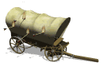

La carreta chillonaLa Carreta Chillona es una leyenda salvadoreña muy conocida debido a que se ha transmitido de generación en generación en forma de relatos contados por aquellos quienes han tenido la oportunidad de escucharla a media noche. En algunos lugares esta leyenda es conocida como Carreta Bruja.La carreta chillona camina de retroceso, paseándose por las noches en las calles de algunos pueblos de El Salvador. Su nombre se origina precisamente del sonido “chillón” que hacen sus llantas de madera cuando camina; también dicen que aveces se escuchan cadenas o huesos que se arrastran cuando pasa y que primero se escucha antes de verla llegar. Algunos dicen cuando pasa la tierra se estremece y otros comentan que quien se atreve a mirarla amanece muerto al siguiente día. Esta carreta, que en sus palos lleva calaveras humanas, no tiene bueyes ni hay nadie quien la vaya guiando, simplemente camina sola, como si algún fantasma la impulsara hacia adelante; sin embargo algunos piensan que es un espíritu que se encarga de recoger las almas que andan en pena y guiarlas hacia la otra vida. Otra versión dice que la carreta es conducida por un difunto sin cabeza. Sea lo que sea lo mejor es no arriesgarse a verla, ya que las consecuencias podrían ser graves para quien lo intente.Se dice que en su interior la carreta chillona transporta muchos huesos y cadáveres de personas que murieron decapitadas y que a la media noche sale desde el cementerio de los pueblos, a recorrer sus calles con las almas en pena y mencionando los nombres de las personas que son mentirosas, falsas e hipócritas, como haciendo una advertencia de que ese podría ser su destino algún día si no cambian. |  |